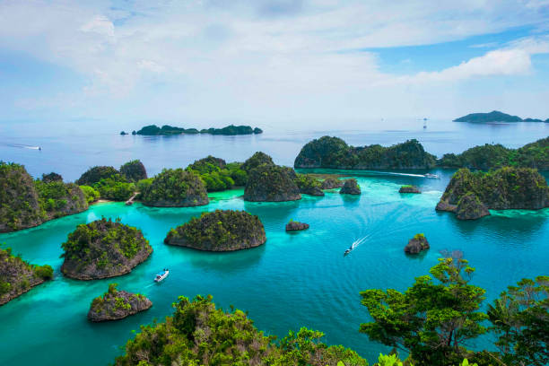
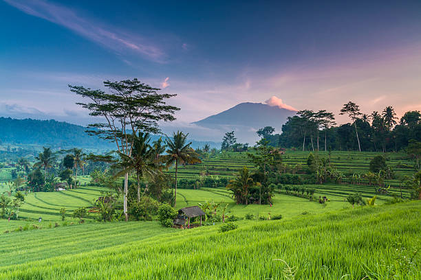
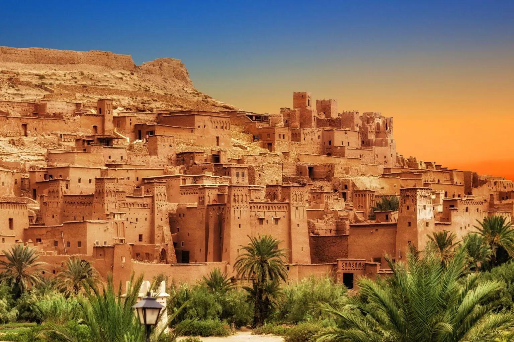
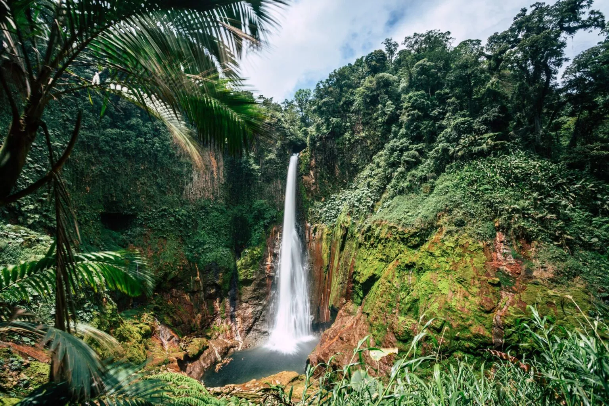

L'Indonésie, la perle de l'Asie.
Publié par Akim : 4 septembre 2023

L'Indonésie est un archipel fascinant situé en Asie du Sud-Est, composé de milliers d'îles qui offrent une diversité incroyable en tsermes de cultures, de paysages naturels, de plages paradisiaques et d'aventures inoubliables :
Géographie et îles :
L'Indonésie est le plus grand archipel du monde, composé de plus de 17 000 îles. Parmi les îles les plus célèbres, on compte Bali, Java, Sumatra, Lombok, Komodo, et bien d'autres. Chaque île a sa propre personnalité et offre des expériences uniques.
Culture et traditions :
L'Indonésie est un pays incroyablement diversifié sur le plan culturel. Vous pouvez explorer des temples bouddhistes et hindous, assister à des danses traditionnelles comme le Legong et le Barong, et découvrir la richesse de l'artisanat local, y compris la batik et l'ikat.
Plages et activités nautiques :
L'Indonésie est réputée pour ses plages paradisiaques, notamment à Bali, avec ses plages de sable fin et ses spots de surf renommés. Vous pouvez également faire de la plongée sous-marine ou de la plongée en apnée dans certaines des eaux les plus riches en biodiversité au monde.
Paysages naturels :
Explorez la beauté naturelle de l'Indonésie, des rizières en terrasses de Bali aux volcans actifs de Java, en passant par les forêts tropicales de Sumatra. Le mont Bromo sur l'île de Java est l'un des volcans les plus impressionnants du pays.
Cuisine indonésienne :
La cuisine indonésienne est une explosion de saveurs exotiques. Essayez des plats locaux comme le nasi goreng (riz frit), le mie goreng (nouilles frites), le rendang (un plat de bœuf épicé), et ne manquez pas les délicieuses brochettes de satay.
Vie marine extraordinaire :
L'Indonésie est l'un des meilleurs endroits au monde pour l'observation de la vie marine. Les îles Raja Ampat, par exemple, sont considérées comme l'un des meilleurs sites de plongée sous-marine au monde, offrant la possibilité de voir des requins, des raies mantas, et une incroyable variété de poissons et de coraux.
Préparation au voyage :
Assurez-vous de connaître les exigences de visa, les vaccinations recommandées et les meilleures périodes pour visiter les différentes régions de l'Indonésie.
L'Indonésie est une destination de voyage incroyable qui offre une combinaison unique de culture, de nature et d'aventure. Que vous recherchiez des vacances détendues sur la plage, des aventures en plein air ou des expériences culturelles enrichissantes, l'Indonésie a tout à offrir aux voyageurs.

Le Maroc, les portes de l'Afrique
Publié par Akim : 4 septembre 2023

Le Maroc est un pays fascinant situé en Afrique du Nord, connu pour sa riche histoire, sa diversité culturelle, sa cuisine délicieuse et ses paysages variés
Géographie et paysages :
Le Maroc est bordé par l'océan Atlantique à l'ouest et la mer Méditerranée au nord. Le pays est caractérisé par une grande diversité de paysages, allant des plages magnifiques aux montagnes majestueuses de l'Atlas, en passant par les déserts spectaculaires du Sahara. Le désert du Sahara, en particulier, est un incontournable pour les amateurs d'aventure.
Culture et histoire :
Le Maroc possède une histoire riche et complexe qui remonte à plusieurs siècles. Il a été influencé par diverses civilisations, notamment les Berbères, les Arabes, les Européens et les juifs séfarades. Cette diversité culturelle se reflète dans l'architecture, l'art, la musique et la cuisine marocaine.
Villes emblématiques :
Explorez des villes emblématiques comme Marrakech, Fès, Casablanca, Rabat et Chefchaouen. Marrakech est célèbre pour sa médina historique, ses souks animés et ses jardins luxuriants. Fès est réputée pour sa médina médiévale bien préservée, tandis que Chefchaouen est célèbre pour ses bâtiments peints en bleu.
Cuisine marocaine :
La cuisine marocaine est une explosion de saveurs exotiques. Essayez des plats tels que le couscous, le tajine, le pastilla, les brochettes de poulet et les pâtisseries comme les baklavas et les cornes de gazelle. N'oubliez pas de déguster un thé à la menthe marocain traditionnel.
Marchés et souks :
Les souks du Maroc sont des endroits fascinants pour découvrir l'artisanat local, les tapis, les bijoux en argent, les céramiques et bien plus encore. Négocier est une tradition dans les souks, alors soyez prêt à marchander.
Expériences uniques :
Le Maroc offre de nombreuses expériences uniques, comme passer une nuit dans le désert du Sahara, visiter des villages berbères traditionnels, ou partir en randonnée dans les montagnes de l'Atlas. Vous pouvez également explorer les palais et les jardins historiques, comme les Jardins de Majorelle à Marrakech.
Conseils de voyage :
Assurez-vous de connaître les formalités d'entrée, de respecter les coutumes locales, et de prendre des précautions pour votre santé et votre sécurité pendant votre voyage au Maroc.
Le Maroc est un pays aux multiples facettes qui offre une expérience de voyage inoubliable. Que ce soit pour découvrir l'histoire et la culture, se détendre sur de magnifiques plages ou partir à l'aventure dans le désert, le Maroc a quelque chose à offrir à tous les voyageurs.
Le Costa Rica : Explorez les Richesses Cachées de ce Joyau d'Amérique Centrale"
Publié par Akim : 4 septembre 2023

Le Costa Rica est une destination de voyage extraordinaire en Amérique centrale, réputée pour sa biodiversité époustouflante, ses paysages variés, ses plages magnifiques et sa culture accueillante
Biodiversité et parcs nationaux :
Le Costa Rica est célèbre pour sa riche biodiversité et son engagement envers la conservation de l'environnement. Le pays abrite de nombreux parcs nationaux, réserves naturelles et aires protégées, dont le parc national de Corcovado, le parc national de Tortuguero et le parc national de Manuel Antonio. Vous pourrez y observer une variété incroyable de flore et de faune, notamment des singes, des paresseux, des toucans et des tortues marines.
Aventures en plein air :
Les amateurs d'aventure trouveront leur bonheur au Costa Rica. Le pays offre une gamme d'activités passionnantes telles que la randonnée, l'observation des oiseaux, le kayak, le rafting en eau vive, le surf, la plongée sous-marine et l'exploration de volcans actifs comme l'Arenal.
Plages paradisiaques :
Les plages du Costa Rica sont tout simplement sublimes. Que vous préfériez les plages de sable blanc du Pacifique ou les plages de sable noir de la côte caraïbe, il y en a pour tous les goûts. Playa Tamarindo, Playa Manuel Antonio, et Puerto Viejo sont quelques-unes des plages les plus populaires.
Écotourisme :
Le Costa Rica est un chef de file mondial en matière d'écotourisme. Les hébergements éco-friendly abondent, allant des écolodges dans la jungle aux refuges en bord de plage. Les pratiques de voyage responsables sont encouragées, notamment la réduction de l'utilisation de plastique et la préservation des écosystèmes fragiles.
Culture et gastronomie :
Découvrez la riche culture costaricienne en visitant des villages locaux, en assistant à des festivals traditionnels et en dégustant la cuisine locale. Ne manquez pas le casado, un plat traditionnel composé de riz, de haricots, de viande, de salade et de plantains.
Pura Vida :
"Pura Vida" est un mantra costaricien qui signifie littéralement "vie pure". C'est un état d'esprit qui encourage la détente, la positivité et la gratitude. Vous entendrez souvent cette expression au Costa Rica, et elle résume bien l'atmosphère paisible du pays.
Conseils de voyage :
Assurez-vous de respecter l'environnement, de prendre des précautions de sécurité lors de vos aventures en plein air, et de vous familiariser avec les coutumes locales pour une expérience de voyage harmonieuse.
Le Costa Rica est une destination idéale pour les amoureux de la nature, les passionnés d'aventure et les voyageurs en quête de détente. Avec sa nature luxuriante, ses plages pittoresques et sa culture accueillante, le Costa Rica promet une expérience de voyage inoubliable.